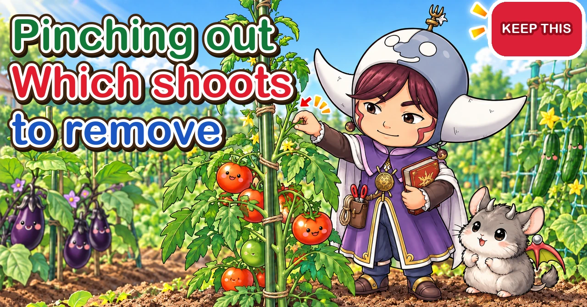
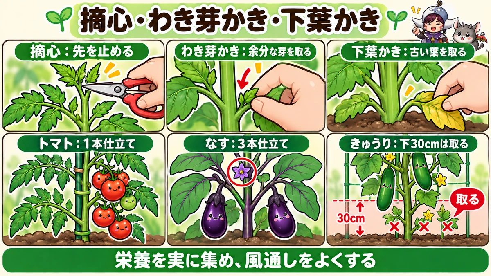
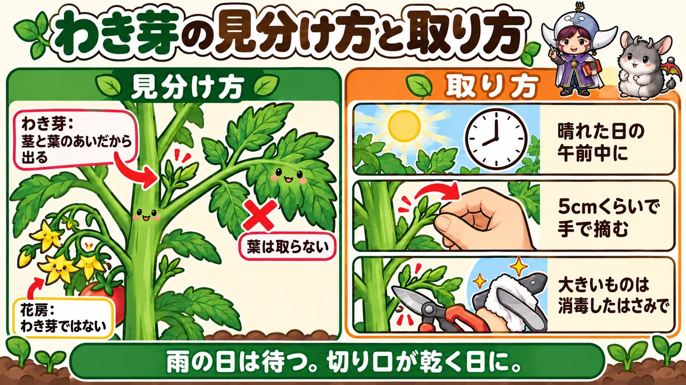
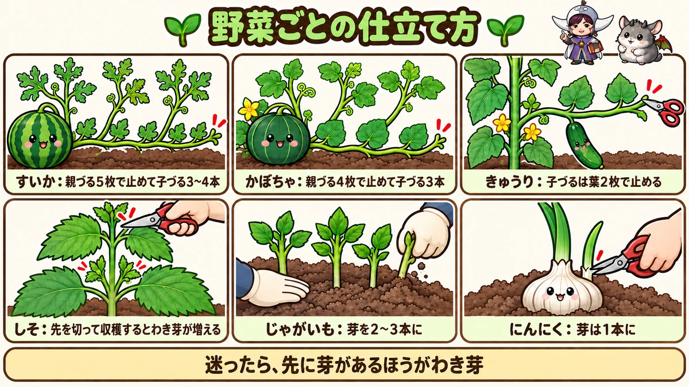

Pinching out and side-shoot pruning 🍅 Which shoot goes?

🍅 "Which little shoot is the side shoot, and which is a leaf?"
✂️ "I took the branch I was meant to keep from my aubergine."
🥒 "My cucumber has become a jungle inside the net."
Hello, I'm Eiko. Eight years of growing vegetables organically and without pesticides, and a teaching licence in science.
Pinching out and removing side shoots look like small jobs, but every vegetable has its own rule. Take the wrong leaf and the plant loses its food factory; leave every shoot and the bed becomes crowded. This guide starts with the vocabulary and the way to identify a shoot, then covers timing, tools, crop-by-crop training, lower leaves, common mistakes and the reason the plants respond.
Where you are: the crop names and seasonal examples follow a central-Japan home garden. “Aubergine” is the same crop often called eggplant; “shiso” is the Japanese perilla herb. Shift the months to your own climate. The figures show the Japanese labels, translated below so you can use the same visual rules anywhere.
The essentials: pinching out stops a growing tip; side-shoot removal takes out an unwanted shoot from a leaf axil. Work on a dry, sunny morning, remove small shoots by hand, use a disinfected pair of scissors for large ones, and keep the main leaves and the chosen branches.
① At a glance: terms and jobs
The terms
- Pinching out: removing the growing tip of a stem or runner so it stops extending
- Side-shoot removal: taking out an unwanted shoot that grows from a leaf axil
- Training: using pinching and shoot removal to set the number and shape of stems and runners
- Lower-leaf pruning: removing old lower leaves or leaves with disease
- Training form: the planned number of stems or runners, such as one-stem or three-stem training
What to do for each crop
- Tomato: remove all side shoots and keep one main stem
- Aubergine: keep the main stem and the two strong shoots just below the first flower; remove shoots lower down
- Pepper: keep two or three strong branches below the first flower and remove shoots below them
- Cucumber: remove shoots and flowers up to about 30 cm from the ground; pinch side shoots after two leaves
- Watermelon: pinch the main runner after about five true leaves and keep three or four side runners
- Pumpkin: pinch after about four true leaves and keep about three side runners; it can also be left largely untrained
- Okra: clear low side shoots and remove leaves below harvested pods
- Shiso and mulukhiyah: harvest the tip to make more side shoots
- Potato: reduce the shoots to two or three
- Garlic: where two shoots emerge from one clove, keep one

What this diagram says （図解の文字）
- Pinching out, side-shoot removal and lower-leaf pruning
- "Pinching out: stop the tip" ／ "Side-shoot removal: take out extra shoots" ／ "Lower-leaf pruning: remove old leaves"
- "Tomato: one stem" ／ "Aubergine: three stems" ／ "Cucumber: remove up to 30 cm"
- "Gather nutrients into the fruit and improve air flow"
② Tools and the first three rules
What to take with you
- Sharp scissors for large side shoots and pinching
- Alcohol or another disinfectant and a cloth
- Gloves: tomato stems and leaves can stain hands yellowish
- A bag for removed shoots and diseased leaves
- Soft ties for securing stems to stakes or netting
Do the pruning and tying on the same round. Once the side shoots are gone, the plant is easier to tie.
If you remember only three crops
- Tomato: remove every shoot from a leaf axil for one-stem training.
- Aubergine: keep the main stem and two shoots just below the first flower; remove lower shoots.
- Cucumber: remove all shoots and flowers up to about 30 cm from the ground.
Once these three make sense, the basic idea is in place. Look up the crop-specific section when you grow the others.
③ Why pinch and remove side shoots?
1. Send food to the fruit
A side shoot makes its own leaves and flowers. If every shoot grows, the plant divides its resources among many branches, so individual fruits can be smaller or fewer. Removing unwanted shoots leaves more of the plant's resources for the branches and fruits you chose.
2. Let air through
A tangle holds damp air. Training reduces crowding, improves air flow and light, and makes disease and insect trouble less likely.
3. Make the plant manageable
When stems and runners grow everywhere, fruit is hard to find and tying, checking and harvesting become difficult. A planned form makes the support system easier to use.
4. Make more harvestable shoots
With leafy herbs such as shiso, mulukhiyah and basil, cutting the tip is also harvesting. Side shoots then appear below the cut, and the number of usable tips increases.
5. Bring fruiting branches on sooner
In aubergines and peppers, removing spare shoots directs resources to the chosen branches, helping the plant extend and set fruit sooner.
④ How to recognise a side shoot
It comes from the leaf axil
A side shoot emerges from the space between the main stem and the base of a leaf. It does not grow out of the leaf stalk itself; it is tucked into the angle between stem and leaf stalk.
It has a growing tip
A side shoot has a small growing point at its end and will extend. A leaf will not continue growing from its tip. When unsure, look for the part that has a new point and is about to become a stem.
On tomatoes, the flower truss helps
The thick stem carrying a flower truss is the main stem. Side shoots come from its leaf axils. A flower truss comes from the stem itself, not the leaf axil, so do not remove it as a side shoot.
Do not remove a true leaf
Beginners often remove a leaf instead of the shoot. Check that the part you are about to take really comes from the space between stem and leaf before pinching.
⑤ Timing and technique
Choose a sunny morning
A cut is a wound. If it stays wet, disease can enter. Work on a dry morning so the cut can dry by midday. Avoid rain and the day before rain.
Pinch small shoots by hand
Up to about 5 cm, a shoot can usually be pinched and bent sideways with your fingers. The wound is small and dries quickly.
Cut large shoots with disinfected scissors
A thick shoot can tear the skin of the main stem when pulled. Cut a large one at its base with clean, disinfected scissors.
Wipe the scissors between plants
Scissors used on a diseased plant can carry disease to the next one. Wipe them before work and every time you move to another plant. Wash your hands before moving on if you handled a diseased plant.
Check often
In summer a side shoot can become surprisingly large in one week. Look once or twice a week and remove it while small.
Do not rush near the growing point
A shoot close to the top can be confused with the growing point itself. Damage there can deform the tip or split the stem into two. Let that shoot grow a little until the difference is clear.
Be gentle with a weak plant
Removing many shoots and leaves from a plant weakened by heat or disease can weaken it further. Do a little, wait for recovery, then tidy gradually.
Wait for a dry spell in the rainy season
Books often say to remove shoots early, but forcing the job on a wet or cloudy day is risky, especially without chemical protection. A shoot that grows a little larger can still be cut with scissors. Spreading disease through wet wounds is the bigger loss.
Remove rootstock shoots from grafted plants
A grafted seedling joins the desired vegetable to a disease-resistant rootstock. Shoots below the graft are rootstock, not the crop you want. Remove them as soon as you see them; they can return, so check repeatedly. Remove the rootstock's first small leaves too.

What this diagram says （図解の文字）
- How to identify and remove a side shoot
- "Side shoot: comes from between the stem and leaf" ／ "A leaf is not a side shoot" ／ "Flower truss is not a side shoot"
- "On a sunny morning" ／ "Pinch by hand at about 5 cm" ／ "Use disinfected scissors for a large one"
- "Wait on rainy days; choose a day when the cut can dry"
⑥ A five-point inspection round
- Start at the base. Work upwards, checking each leaf axil and pinching a shoot as you find it.
- Check the lower leaves. Remove yellow leaves and leaves touching the ground.
- Tie the growth. Secure stems and runners to a stake or net with a loose figure-eight, not a tight loop.
- Look for insects and disease. Check leaf undersides, new shoots and spots.
- Check the top. When the plant reaches the top of its stake or net, consider pinching the tip.
⑦ Tomatoes
One-stem training is the starting point
Grow one main stem straight upwards and remove side shoots from its leaf axils. Leaving every shoot can add fruit, but fruit may be smaller and the branches become hard to manage.
Do not rush just after planting
A newly planted seedling has a small root system. Wait until it has settled and starts growing before its first side-shoot round.
Face the first flower truss towards the path
Tomato flower trusses tend to appear on the same side. Planting the first truss towards the path makes later harvests and shoot removal easier.
Cherry and medium-fruited tomatoes
One stem is also the basic form for cherry and medium-fruited tomatoes. Vigorous varieties produce shoots quickly, so check them often.
When to pinch the top
When the stem reaches the stake, leave about two leaves above the highest flower truss and pinch the tip. The plant then stops climbing and sends resources to the fruit already set.
Two stems for experienced growers
You can leave one strong shoot just below the first flower truss and grow it alongside the main stem. This is said to increase the harvest, but the branches become heavy and can break or overwhelm the support. One stem is easier for a first attempt.
Root a healthy removed shoot
Put a healthy shoot about 10 cm long in water. Roots may appear in several days to one week; plant it in soil as a cutting.
Keep the first tomato fruit
Aubergines, peppers and cucumbers may have their first fruit removed while the plant is small, but tomatoes are different. Let the first flower's fruit grow and harvest it. Setting that first fruit is said to help later trusses set too. Around first flowering, replace the support with a firm stake about 2 m long and tie the stem well.
If the plant has become a tangle
Trace the stem from the base until you find the main stem. Cut thick unwanted branches with disinfected scissors on a dry day, over several rounds. Removing everything at once can weaken the plant.
⑧ Aubergines and peppers
Three stems for an aubergine
Keep the upright main stem and the two strong side shoots immediately below the first flower: three stems in all.
The order matters
- Find the first flower.
- Find the two shoots directly below it and leave them.
- Remove every shoot lower down.
- After the first flower sets a fruit, remove that fruit while it is small.
Confirm the flower before taking anything. If you remove it first, you lose the landmark that tells you which shoots to keep. Remove the first fruit last.
Why remove the first aubergine
A small plant can be held back by swelling its first fruit. Removing it while small lets the saved resources build the plant so it can crop for longer.
Four stems are possible
If a vigorous shoot appears above the first flower, you can keep it and use four stems. If you accidentally removed one of the two lower shoots, a strong shoot above the flower can take its place.
Lower leaves on aubergines
Once fruit starts, remove old leaves at the base and leaves touching the ground. This opens the plant and reduces disease from mud splash.
Peppers
Keep two or three strong branches below the first flower and remove lower shoots. Clearing them early improves air at the base. Pepper branches divide finely, so thin extra twigs when they become crowded. Remove a first fruit from a small plant; later, harvest often so a large plant is not carrying too much at once.
⑨ Cucumbers
Clear the lower 30 cm
On the main runner, remove side shoots, male flowers and female flowers up to about the fifth or sixth true leaf — roughly the lower 30 cm. Remove small fruit there too. Fruit close to the ground is more likely to touch soil and curve, and early fruiting can exhaust the plant.
Let the main runner climb
Usually leave the main runner unpinched and guide it straight up the net. Pinch its tip when it reaches the top.
Pinch side runners after two leaves
Above the sixth true leaf, side runners can carry fruit. Leave two leaves and pinch the runner's tip so resources go to the fruit and the net stays open.
Use gaps sensibly
If the net has room and neighbouring plants do not collide, a side runner can grow further and even make a third-order runner. Pinch when it becomes crowded. A runner heading away from the net will trail on the ground, so stop it early.
⑩ Watermelons, pumpkins and melons
Watermelon
Pinch the main runner after about five true leaves. Grow three or four side runners and set fruit on them; remove the other spare shoots.
Pumpkin
Pumpkins can be left to run, but training helps in a small garden. Pinch the main runner after about four true leaves and keep about three side runners. After that they need little interference. One-main-runner and two-runner forms are possible too.
Before or after planting
Pinch the main runner while the seedling is still in its pot, or after planting while it is small; either timing is workable.
Melon
When the main runner has five or six leaves, pinch the tip and let side runners grow. Then disturb it as little as possible. In a polythene tunnel, open the skirt a little around flowering so bees can enter and help pollination.
⑪ Other vegetables
Container cherry tomatoes
Use one-stem training. Containers hold little soil, so too many shoots exhaust the available feed more quickly than in a bed. Check more often and pinch the top when it reaches the stake.
Okra
Remove low side shoots for air. If you want more pods, keep a higher side shoot instead. Once harvest starts, leave one leaf immediately below the harvested pod and remove leaves below it; when the plant is young or weak, leave two leaves.
Shiso and basil
Do not pluck individual leaves only. Cut the stem tip with scissors to harvest. Two shoots then grow from the leaf axils just below the cut. Cut those tips again as they extend and the number of branches increases.
Mulukhiyah
When a side shoot is 15–20 cm long, cut above the newest tip so that tip remains for regrowth. The main stem can reach a person's height; when it is tall enough, pinch 15–20 cm from the top. The cut tips are edible.
Edamame
If a plant is very leafy and vigorous, pinching the tip is said to encourage side shoots and more fruiting points. Do not do it to a weak plant.
Potatoes
When shoots reach about 10 cm, keep two or three strong ones and remove the rest. Hold the soil around the base while pulling so the seed potato does not come out.
Garlic
Two shoots can emerge from one clove. Leaving both can split the bulb and keep it small. On a dry day, use disinfected scissors to cut the smaller shoot at its base and keep the larger one.

What this diagram says （図解の文字）
- Training forms by crop
- "Watermelon: pinch after 5 leaves; keep 3–4 side runners" ／ "Pumpkin: pinch after 4 leaves; keep 3 side runners" ／ "Cucumber: pinch side runner after 2 leaves"
- "Shiso: cut the tip to harvest and increase side shoots" ／ "Potato: keep 2–3 shoots" ／ "Garlic: keep 1 shoot"
- "When unsure, the shoot with a growing tip is the side shoot"
⑫ Lower-leaf pruning
Why remove lower leaves?
As a plant grows, upper leaves shade the lower ones. Old lower leaves make little food, restrict air at the base and can catch disease from soil splash. Removing the right ones opens the plant.
Leaves that can come off
- Yellow or dead leaves
- Leaves with disease spots
- Leaves touching the ground
- Leaves below a harvested fruit truss, for crops such as tomatoes and okra
Do not strip the plant
Green, healthy leaves make food. Remove lower leaves gradually over several rounds, and remove fewer when the plant is weak.
Bag diseased leaves
Put spotted leaves in a bag and take them out of the garden. Leaving them on the soil can spread disease.
⑬ Training and supports
Tomatoes
For one stem, use one stake about 2 m high per plant. For two stems, use two stakes or guide each branch up a pair of sloping supports.
Aubergines and peppers
For three stems, guide the main branch up a central stake and the two side branches up supports angled left and right. A single central stake with the side branches hung from ties is another option.
Cucumbers
Set stakes and a net, guide the main runner upwards and spread side runners sideways through the net.
Watermelons and pumpkins
On the ground, point the chosen runners in the same direction so they do not overlap. Where space is tight, they can be trained upwards on a net or support.
⑭ Through the year (central Japan)
- April–May: plant tomatoes, aubergines, peppers and cucumbers; once rooted, start the first shoot round. Set aubergines around the first flower, clear lower cucumber shoots and flowers, and thin potato shoots. On garlic, pick off the flower stalk (scape) when it starts to grow.
- May–June: pinch watermelon and pumpkin runners; check tomato side shoots once or twice a week.
- June–August: shoots grow fast, so inspect often. Pinch cucumber side runners and harvest-pinching shiso and mulukhiyah.
- July–September: pinch the tomato main stem once it reaches the top of its stake, and remove lower okra leaves.
- October–November: where two garlic shoots have emerged, keep one when the plants are 10–15 cm tall.
⑮ Where advice differs
Are two tomato stems better?
Two stems are said to increase the harvest, but heavy branches can topple supports, break or crowd the leaves and invite disease. Start with one stem and try two after you are comfortable.
Must every cucumber side runner be pinched?
Two leaves are often recommended for neat fruit. If the net has space, a runner can be allowed to extend and make more fruiting growth. Use crowding, not a rigid rule, as the guide.
Should the cucumber main runner be pinched?
Some growers pinch it and keep two side runners; others find little change in harvest. Leaving the main runner to reach the top is the simpler home-garden method.
How small should a side shoot be?
About 5 cm is a common guide. A shoot that is too tiny can be confused with the growing point or a flower truss, so wait until it is recognisable, but do not let it become thick and large.
Must the first aubergine be removed?
Removing a first fruit from a small plant is said to build a stronger crop. A large, vigorous plant may carry and harvest it. Judge the plant's size and strength.
⑯ Common mistakes
Taking a true leaf instead of a shoot
You have removed a food-making leaf. Check that the part comes from the space between stem and leaf.
Waiting until the shoot is huge
Pulling a thick shoot can tear the main stem. Inspect once or twice a week; cut a large one with disinfected scissors.
Pruning on a rainy day
Wet cuts dry slowly and disease enters more easily. Choose a sunny morning.
Removing the first aubergine flower first
Find the flower and choose the two shoots to keep before removing the flower or fruit.
Damaging the growing point
Do not rush at a shoot near the tip. Wait until it is easier to tell apart.
Leaving lower cucumber fruit
Fruit below about 30 cm can touch the ground, curve and burden the young plant. Remove the flowers and fruit there.
⑰ Questions
I cut all the pumpkin runners to make them neat
Fruit is fed by leaves on the runners. Keep the chosen number of runners and remove spare shoots, but do not shorten every runner until there are too few leaves to swell the fruit.
I picked only shiso leaves
That lets the stem climb without making many side shoots. Cut the tip as a stem harvest instead.
I removed too many leaves at once
The plant loses its food-making power and fruit can suffer. Remove lower leaves a little at a time.
A forgotten side shoot is now a branch
You can leave it to fruit if the plant has room. If it crowds the plant, cut it with clean scissors on a dry morning, in stages if necessary.
Can I grow cherry tomatoes without removing shoots?
Yes. There will be more fruiting branches, but individual fruit may be smaller and crowding can increase disease. It is worth trying only where you have space to organise the branches; one or two stems are easier in a small area.
Do I need to feed after removing shoots?
Not simply because you removed a shoot. Feed according to the crop and start top dressing as fruit begins to form.
Why did tomato pruning stain my hands?
Fine hairs and scented sap from tomato stems and leaves can leave a yellowish stain. Wear gloves if it bothers you.
The tomato main stem broke
Keep one strong side shoot immediately below the break and train it as the new main stem. For a broken aubergine or pepper branch, cut back at the break and train a remaining branch or shoot.
Do grafted and seed-grown plants differ?
The basic pruning is the same. Grafted plants additionally need shoots from the rootstock below the graft removed.
Can I eat the pinched tip?
Shiso, mulukhiyah and basil tips are harvests. Do not eat tomato or aubergine tips.
Do containers need shoot removal?
Yes. With less soil, containers run short of resources sooner, so careful training can matter even more.
How often should I inspect?
Once a week just after spring planting is usually enough. In early summer and summer, twice a week catches shoots while small. A little every day is easiest if you are nearby.
What do I do with the removed shoots?
Clear them from the bed because they can harbour disease and insects. A healthy tomato shoot can be rooted as a cutting.
⑱ The science: why the plant responds 🔬
Why pinching makes side shoots grow
The growing tip produces a plant hormone that suppresses the growth of side buds. While the tip is active, the hormone moves down and side shoots stay quiet. Remove the tip and the signal no longer reaches the buds, so shoots in the leaf axils begin to grow. This is why pinching shiso, watermelon and similar crops produces more side growth.
Why removing side shoots can enlarge fruit
Leaves send their food to fruit, new shoots, roots and other growing parts. Many side shoots compete for the same food. Removing the unwanted ones concentrates more of it in each chosen fruit.
Why removing a first fruit can build the plant
A swelling fruit is a strong sink for food. On a small plant, it can take food away from roots, leaves and stems. Remove it and more food builds the plant's body; a larger plant can then support fruit for longer.
Why runners matter on vine crops
Watermelons, pumpkins and melons are said to set female flowers more readily on side or later-order runners than on the main runner. Pinching the main runner early creates the runners that can carry fruit. Cucumbers set female flowers on both main and side growth, so the main runner is usually kept and side runners are used too.
Why lower leaves turn yellow
Older lower leaves become shaded and make less food. The plant moves their stored nutrients to brighter new leaves and developing fruit. The old leaves then yellow and die. Yellowing of a shaded lower leaf can be part of the plant's normal recycling.
Why disease enters a cut
A cut exposes the inside of the stem. When it stays wet, pathogens can settle there and enter. Dry-morning pruning gives the wound time to seal before that happens.
To sum up
- ✅ Pinching stops a tip; side-shoot removal takes out extra growth. Both direct food, open air and shape the plant.
- ✅ A side shoot comes from the leaf axil and has its own growing tip. Do not confuse it with a true leaf or flower truss.
- ✅ Work on a sunny morning. Pinch a small shoot by hand; cut a large one with disinfected scissors.
- ✅ Tomatoes start with one stem; aubergines with the main stem plus two shoots below the first flower.
- ✅ Cucumbers clear the lower 30 cm and pinch side runners after two leaves.
- ✅ Pinch watermelon after five leaves and pumpkin after four, then keep the chosen side runners.
- ✅ Harvest-pinching shiso and mulukhiyah makes more usable shoots.
- ✅ Remove rootstock shoots, lower leaves gradually and diseased leaves into a bag.
- ✅ In the rainy season, wait for a dry spell rather than spreading disease through wet cuts.
Thank you for reading all the way to the end! The easiest habit is a small weekly round. At your next visit, look into the leaf axils of a tomato and find the tiny shoot before it becomes a branch 🍅
Thank you for reading!